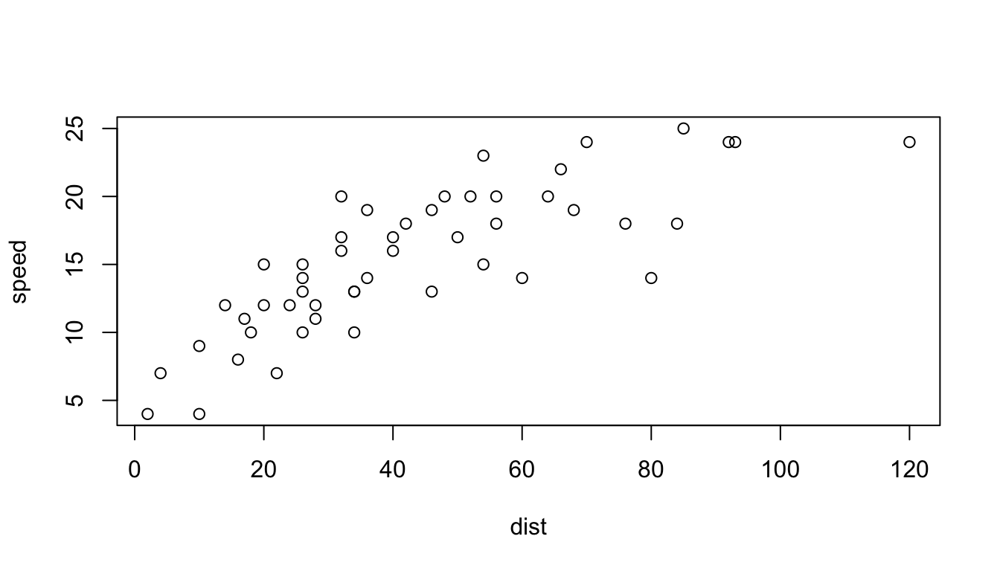

Chapter 4 Reproducible research
One way to make reproducible work is to use literate statistical programming or literate programming. The concept of literate program comes from the computer scientist Don Knuth (note that even Don Knuth used R!, see its talk at useR!2016). The basic idea is to write programs while documenting the code at the same time. What can be called literate statistical programming is thus the practice of having both the code (and the data) for the statistical analysis and its documentation in the same document.
Consequently it requires a documentation language and a programming language. The first attempt in R (with a package called sweave) used LaTeX as the documentation language and R as the programming language. Then, Yihui Xie, while he was a grad student at Iowa State University developed the R package knitr which supports other documentation languages such as Markdown (Markdown is a simplified version of what is called a markup language), LaTeX and HTML and programming languages (Python, SQL, Bash, Rcpp, Stan, Jav), see this webpage for further information. Then, the output can be exported to PDF and HTML or to other formats (Word document, slide show, notebook, handout, book, dashboard, webpage package vignette, beamer, slidy, revealjs, or other format) using other tools such as Pandoc (see this webpage for further information).
To facilitate the use of such a pipepline, it is possible to use what is called RMarkdown where the whole process is embedded. Again the use of R markdown is facilitated within the Rstudio framework. Basically, RMarkdown is a file with an extension .Rmd which includes classical text, text written in Markdown and R code chunks. You can simply create a Rmarkdown document with “File, New File, RMarkdown document”. When clicking on the Knit button in Rstudio, the Rmd file is processed by knitr which outputs a markdown document (.md) which includes both the code and the outputs. Then, it is transformed into HTML or pdf (or other formats using pandoc).
Simple Markdown text include: - italics - bold - code - links - etc.
- *italics*
- **bold**
- `code`
- [links](rmarkdown.rstudio.com)There are many options (more in this cheatsheet) that can be used for the R chunks such as: * echo = FALSE; do not display the code but the results are shown
* results = “hide”; to hide the results
*include, message, warning, fig.cap = “…” (add a caption to graphical results), fig.align=“center”, etc.
The option cache = TRUE is useful if a code chunk takes long time to run. With this option, the code will not be processed each time you knit. It will keep the output on the disk and load it when necessary.
Global options can be set at the beginning of the file as follow:
knitr::opts_chunk$set(echo = FALSE, results = "hide")They apply to every chunk in the file but could be overwritten in individual chunk headers.
Few other tips. Beautiful tables can be included with knitr’s kable function:
library(knitr)
kable(mtcars[1:5, ], caption = "A knitr kable.")| mpg | cyl | disp | hp | drat | wt | qsec | vs | am | gear | carb | |
|---|---|---|---|---|---|---|---|---|---|---|---|
| Mazda RX4 | 21.0 | 6 | 160 | 110 | 3.90 | 2.620 | 16.46 | 0 | 1 | 4 | 4 |
| Mazda RX4 Wag | 21.0 | 6 | 160 | 110 | 3.90 | 2.875 | 17.02 | 0 | 1 | 4 | 4 |
| Datsun 710 | 22.8 | 4 | 108 | 93 | 3.85 | 2.320 | 18.61 | 1 | 1 | 4 | 1 |
| Hornet 4 Drive | 21.4 | 6 | 258 | 110 | 3.08 | 3.215 | 19.44 | 1 | 0 | 3 | 1 |
| Hornet Sportabout | 18.7 | 8 | 360 | 175 | 3.15 | 3.440 | 17.02 | 0 | 0 | 3 | 2 |
The results of an R output can be used within the text,
date <- format(Sys.time(), "%a,%b, %d,%X,%Y")I would like to use
`r date`Lun,oct, 30,10:25:12,2017.
Finally, we should remark that when a plot is included into a Rmarkdown document, the image is not saved anywhere. knitr creates an HTML file and the image is embedded into this HTML files (Base64 encoded) to have an HTML file that can be used on its own. (To see this, just look at the code of HTLM output).
plot(speed~dist, data = cars)
To wrap-up, the practice that is made easier with RMarkdown is to keep everything (the data, the code and the output) in the same document. In addition, we recommend to keep all the code used to preprocess, clean the data. Indeed, a still common practice is to keep only the “clean data” and to forget about the many steps that have been done to get to this data set and to consider it as your new dataset.
In addition, to really make your work reproducible, do not forget to set a seed (set.seed) and to keep the information on your R versions, the versions of the packages you use with the following command:
devtools::session_info()